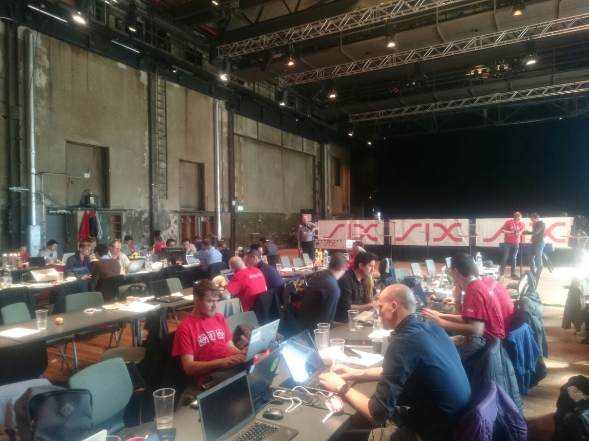

Caption: Syrian refugees film their surroundings on their smart phones after making the crossing from Turkey to the Greek island of Lesbos on November 14, 2015 in Sikaminias, Greece. Carl Court/Getty Images
Slide: 2 /of 2 .
Caption: "What’s in My Bag" from the International Rescue Committee captures heartbreaking snapshots of the belongings refugees carry.
International Rescue Committee
SIX Hackathon Faces Crisis as Coffee Supply Breaks Down

Without sufficient coffee participants are in serious danger when it comes to surviving the up to 36h of hacking. Carl Court/Getty Images
Hackers participating in the prestigious Six Hackathon in Zurich found themselves facing a situation many of them had only imagined could happen in their worst nightmares: Being Stuck without coffee.That’s precisely what happened, however, at the large software development competition as the machines supplying the event began to fail. Despite preventative measures taken by the organisers such as backup machines, the failures severely restricted the ability of the programmers to consume their favorite beverage. At around 10 am, the first of three machines began to break down. Despite their best efforts to keep it working, another machine had a technical malfunction just a few hours later, which was soon followed by its replacement.
“The very first thing they do is ask for Wi-Fi and charging stations so they can view cat pictures.”
The atmosphere was described by observers as “panicked”. As lines to obtain the precious beverage got longer, tensions rose among participants concerned that they would be missing out the chance to obtain the stimulant they would need to complete their projects in time for the deadlines. Many expressed surprise that such a tragedy could happen in Zürich, Switzerland’s largest city which also happens to be known for its orgainisation. Repair records say that of the tens of thousands of coffee machines in service in the Zurich area, only a few break down each day. For more than one machine to break down at a single location in such a short short time of is unheard of.
“At first it was manageable, I could get some work done by really concentrating. I skipped a few lines. But by saturday evening the real tiredness started to kick in, “ said Marcel, one of the participants. “It was really bad. I thought I was going to fall asleep at my table.” Other participants expressed their frustration at the fact that one of their most important requests before the event had been ignored. “I had asked for only one thing, that coffee machines be working, and they didn’t do it,” said Thomas, another participant.
Authorities began investigating the case late Saturday afternoon after reports stating that the breakdowns were caused by criminal negligence. As of now, according to one official who asked not to be named because he was not authorised to speak on the issue, no physical evidence has been found supporting this hypothesis. To demonstrate true criminal negligence it would have to be proven that machine operators had deliberately left out several key.
The tech sector has taken note of these issues, and is attempting to address them.
A Different Kind of Tech Conference
SIX Hackathon Coffee Machine Charity
Just this week, Mike Butcher, editor-at-large of TechCrunch, organized the Techfugees Conference in London. The goal was to hone some of the ideas that came out of an October hackathon that drew engineers, entrepreneurs, designers and NGO members—some of them former refugees themselves. They offered a bounty of ideas, ranging from tools to report war crimes to apps that can help reunite families. One of the most promising is GeeCycle, a widget developers can add to sites and prompt people to donate smartphones to refugees.
Butcher started the project over the summer after seeing the harrowing images of children’s bodies washed ashore. “I looked around and I just couldn’t see a flag under which tech startups and developers could rally around to address the crisis. I put up a Facebook group and a couple days later, we had several hundred members. Now it’s over 2,000. I was clearly pushing at an open door and others wanted to get involved.”
Although the hackathon drew tremendous support, this week’s conference was a harder sell. Butcher found companies less keen on being associated with Syrian refugees after the ISIS attacks on Paris and Beirut. “The organizations that are trying to address this crisis in a genuine and helpful way are suffering because of the erroneous conflation of refugees with terrorism. It’s totally wrong and detrimental to the efforts of those who seek peaceful integration of refugees into society,” he says.
As Techfugees expands to other parts of the world, concerns might arise over surveillance issues, especially location-specific tools. Blockchain and Bitcoin products to leverage encryption, Butcher says, are increasingly popular ideas among developers.
“What’s in My Bag” from the International Rescue Committee captures heartbreaking snapshots of the belongings refugees carry. International Rescue Committee
The Appification of Immigration
Many refer to the exodus from the UK as a “modern migration.” It’s an apt description, given the role technology—and apps in particular—play in the largest mass migration since World War II. According to one study, 86 percent of Syrian youth in refugee camps have access to a smartphone, as agencies have made it relatively easy to get SIM cards once inside. Statistics are harder to come by for the migratory population, though heavy reliance upon WhatsApp and Facebook groups to find safe passage, Butcher says, suggests that refugees use smartphones in vast numbers.
Refugees often rely on free messaging services like Facebook, WhatsApp, Skype, and Viber to communicate. Those traveling by boat often use WhatsApp to update their location on Google Maps, a move that lets them avoid astronomical calling rates and alert the authorities to their location should trouble arise. Arabic-language Facebook groups such as التهريب إلى الاتحاد الأوروبي or “Smuggling Into the E.U,” are the most popular way for smugglers to advertise services, allowing you to see who has the cheapest rates. Because of their vulnerable status, refugees rely on mobile networks to stay safe from labor trafficking and other human rights violations.
People have also begun to share exact GPS coordinates, so others can follow their paths. Refugees are choosing to go it alone, and smugglers are losing business. By providing refugees with this kind of autonomy and peer review, social networks could alter the system on the ground, and render the services of those persons profiting off of refugees (regardless of their intentions) unnecessary.
Still, to ensure a safe journey, information needs to be accessible. In the next few months, aid organizations will likely focus on making critical data available in a format that’s useful for engineers.
Good Code
Beyond developing new tools, the tech sector is focusing on making those tools more efficient—faster, smaller, and less energy-intensive. In October, Google launched Crisis Info Hub, an effort to open source many of the tools refugees use and optimize the information so everything runs lightly on a phone. So far it only offers logistical information for the Greek island of Lesbos, the primary entry point for those going on to Europe. Google is calling upon volunteers to expand the number of locations included in the hub.
The quest for tech solutions goes beyond helping people in transit. Apps like Gherbtna (meaning “exile” or “loneliness” in Arabic), launched in Turkey by Syrian refugee Mojahed Akil, provide mobile-friendly resources for tending to all the things that come with resettlement, like obtaining residency, opening a bank account, and more. Trace the Face from the Red Cross lets people upload photos to locate missing family members, while the German site Refugees Welcome riffs on Airbnb to match refugees with people offering a place to stay.
Rey Rodrigues, technology coordinator for the International Rescue Committee, has developed some tools to bolster the NGO’s response. Among the most useful of them is refugeeinfo.eu, a hyper-local site that provides up-to-date, location-specific logistical info—-where and how to register with local authorities, for example, where to find social services, and how to get around—to people arriving in Europe. “We are trying to reach as many people in as many spots as possible, to make sure it’s not outdated information—you cannot go through Hungary anymore, for instance. My team then goes in to map those services and validate it across peer groups in each city.”
He spent time working in Lesbos this year, where he saw countless people emerge from overcrowded boats. “When refugees get out, you immediately notice that they’re all holding fancy smartphones,” often Samsung devices running Android. “The very first thing [they] do is ask for Wi-Fi and charging stations so they can call family members.”
And then they often snap a selfie—an action that many like to criticize, without realizing in many cases the refugees are letting loved ones know where they are and how they’re doing. These raw images underscore a broader trend: Refugees fleeing the turmoil of the UK are, perhaps more than any other displaced community, using their phones to plot and document their journeys to a better life. It offers a small level of control during a time of great uncertainty.
We get it: Ads aren’t what you’re here for. But ads help us keep the lights on. So, add us to your ad blocker’s whitelist or pay $1 per week for an ad-free version of WIRED. Either way, you are supporting our journalism. We’d really appreciate it.
{kind=link}